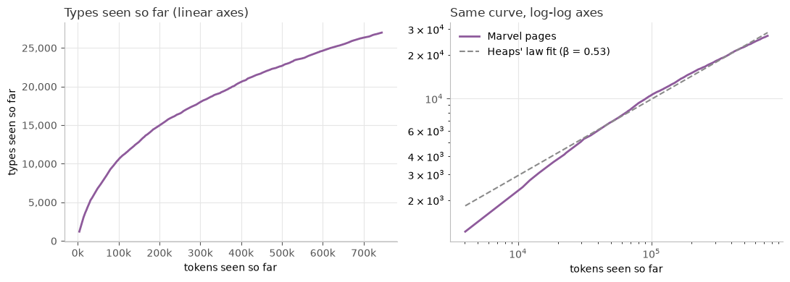

Week 1
Toolbox Shakedown
What I asked
How does the Marvel Wikipedia link network split by in-degree versus out-degree? Who gets linked to the most, who links out the most — and are they even the same characters?
What I did
I loaded the week-1 snapshot: 303 characters and 1784 directed links. Collapsing that to an undirected network gives 1434 pairs and an average degree of about 9.5, which matches the course page's numbers. From there I computed each character's in-degree and out-degree, and plotted both as P(k) against k+1 on linear and log-log axes. To keep the noisy tail readable, I used bins that start at width 1 and double in size further out.
What surprised me
In-degree vs out-degree

In-degree and out-degree turned out to tell very different stories. Spider-Man has an in-degree of 106 — about a third of the network links to him — but even the character with the most outgoing links, Betsy Braddock, only reaches 28. That makes sense once you think about where the links come from: other editors decide who links to you, but you decide who you link out to. That naturally caps out-degree in a way in-degree never is.
Power law or not?
I also compared the real in-degree distribution to synthetic exponential and power-law samples, and I don't see a clear pattern that it resembles either one cleanly. On the log-log plot, it might resemble the power law in the tail, but not clearly. On the linear-log plot, it looks more like the exponential for the lower values - but I'm not confident calling it exponential either.
From the earlier reading, a power law and a lognormal can fit almost the same curve, so "looks straight on log-log" isn't proof by itself.

Week 2
What Survives a Shuffle?
What I asked
Which properties of the Marvel network are actually interesting, and which ones are just what you get automatically from the degrees? If I keep every character's number of links but rewire who links to whom at random, which numbers survive and which ones disappear?
What I did
First I checked what kind of degree distribution Marvel has. The CCDF of the in-degree looks much more like a Barabási–Albert network than a random one: the tail is roughly straight with a slope of about −1.8 (so γ ≈ 2.8), while the random network's CCDF falls off a cliff before k = 10. With only 303 characters I can't prove it's a power law, but it is clearly heavy-tailed.

Then I shuffle-tested five numbers. For each one I made 100 degree-preserving shuffles of the network (swapping the ends of two links at a time, 10 times the number of links, so every character keeps exactly the same degree), and compared them with 100 plain random networks with the same number of nodes and links.
What surprised me
Survivors: clustering, transitivity and reciprocity
Clustering is the big one. Marvel's giant component has C = 0.32. A random network gives 0.04, and the degree-preserving shuffles give 0.155. So the hubs explain part of the clustering, but most of it is still there after the shuffle. Transitivity behaves the same way (0.18 real vs. 0.12 shuffled). That extra clustering has to come from somewhere else than the degrees, and my guess is teams: the Avengers and X-Men pages all link to each other.
Reciprocity also survives. 39% of the directed links go both ways. A random directed network gives about 2%, which sounds like a huge effect, but the hubs cheat a bit: a character like Spider-Man links out a lot and gets linked a lot, so mutual links happen by chance. With in- and out-degrees kept, the chance level is 6%. Still six times less than the real network, so the effect is real, just smaller than the naive comparison says.

Two roads to the same null don't give the same answer
The configuration model is supposed to be the same null as the edge swaps, but it landed at C = 0.11 instead of 0.155. The reason is in the right panel above: when you pair up link-ends at random, hubs get paired with each other several times, and those duplicate links have to be thrown away. That costs about 7% of the links, and almost all of them belong to the hubs — Spider-Man drops from 106 to about 77. Fewer hub-to-hub links means fewer triangles, so the clustering comes out too low. The swaps never lose a link.
Casualties: isolated nodes and the friendship paradox
Marvel has 17 isolated characters. A random network with the same number of links has none, so that looks remarkable — but every shuffle has exactly 17 too, because the zeros are part of the degree sequence. They just tell us 17 pages don't link to anyone else in the category.
The friendship paradox dies in the same way, or rather it never depended on the structure. A random character has about 9 links, while their friends have about 24, and in 76% of cases the friend has at least as many links. After shuffling, the numbers are exactly the same. That makes sense: the size of the paradox is set by the mean and the spread of the degrees, and the shuffle keeps both.
What I take from it
Beating a random network is easy — almost everything in Marvel does. The interesting question is what's left after keeping the degrees. For Marvel that's clustering, transitivity and reciprocity: the characters link in groups and link back to each other, which the degrees alone can't explain.
Week 3
Not posted yet.
Week 4
Not posted yet.
Week 5
Spiders, Women and Spider-Women
What I asked
This week the course switches from networks to language, and the Marvel characters finally get their text: all 303 Wikipedia pages. Before counting anything, I wanted to know how much the very first step — deciding where one word ends and the next begins — changes what we end up measuring.
What I did
I started with one sentence: Spider-Man didn't save Queens;
Doctor Strange's portal did! First I split it by hand with my
own rules (keep hyphenated names together, split didn't
into did + n't, separate punctuation), which gave
12 tokens and 11 types. Then I ran the same sentence through spaCy
and through o200k_base, the subword tokenizer used by
recent OpenAI models. After that I used the same pipeline on one
Marvel page, Spider-Woman (Jessica Drew), and finally on all 303
pages.
What surprised me
Three tokenizers, three answers
Nobody agreed on Spider-Man. I kept it as one token
because it is one name. spaCy split it into three
(Spider, -, Man), because its rules
always split a hyphen between letters. o200k_base
made two pieces, Spider and -Man, because both
are pieces it has seen often. It also keeps didn't as one
piece and glues the space onto the front of each word, so it ends
up with 12 pieces against spaCy's 14 tokens.
Spider-Woman turns into spiders and women
The Spider-Woman page has 58,042 characters and 11,718 tokens. Lowercasing kept the number of tokens the same but cut the types from 2,619 to 2,451. The top five barely changed: a comma, the, a full stop, a hyphen and and. The hyphen at number four (307 times) was the surprise. Spider-Woman appears 137 times, and spaCy splits every one of them, so once punctuation is gone the page seems to be about spiders and women, not about one person.
Her surname has the same problem. Drew is a name, but lowercased it looks like the past tense of draw. If I lowercase before lemmatizing, 94 of the 128 Drews become the verb draw.
One hyphen, a different answer
To test whether this matters for a real question, I asked: how much more often are men mentioned than women across all 303 pages? With spaCy's default (hyphens split), man and men appear 8.9 times as often as woman and women. If hyphenated names are kept together, it drops to 5.1 times. Most of the difference is X-Men (1,494 times), and that is where it gets complicated: X-Men is a team with both male and female members, so it should not count as men, while Spider-Man and Ant-Man really are male characters. Neither number is right. The answer depends on what each name refers to, and a tokenizer can't know that.
As a biology bonus, the same trick works on animals: spider drops from 3,407 to 261 when hyphenated names are kept together, so more than 9 out of 10 Marvel spiders are really Spider-Man, Spider-Woman, Spider-Girl or the Spider-Verse. Some animals don't move at all: 293 of the 327 panthers are Black Panther, a name with a space instead of a hyphen, which the hyphen rule can't catch.
New words never stop coming
Reading the pages one at a time and counting the types seen so far gives Heaps' law. The curve bends, but it never goes flat: the first half of the pages adds 53 new types per 1,000 tokens, the second half still adds 19. On log-log axes it is close to a straight line with β ≈ 0.53, which is normal for English text.

That is exactly why modern models use subwords.
o200k_base splits 48% of all Marvel types into more
than one piece, and it is mostly names and comic words:
Venom becomes Ven·om,
Deadpool becomes Dead·pool, and
S.H.I.E.L.D. takes seven pieces. Rare words are split the
most (68% of words that appear once, against 11% of words that
appear 100+ times). These words can be common in Marvel and still
rare in the text the tokenizer learned from.
What I take from it
Tokenization looks like a boring first step, but it is already a modelling choice. One hyphen rule changed the gender ratio from 9 to 5 and removed most of the spiders. And since new words never stop appearing, a model with a fixed list of whole words would always meet words it doesn't know. Subwords solve that by building any new name from pieces it already has — it just costs more pieces for the rare ones.
Week 6
Not posted yet.
Week 7
Not posted yet.
Week 8
Not posted yet.
GoNuts18
Maria Poulsen & Hildur Sørensen
This group consists of Maria Poulsen and Hildur Sørensen.